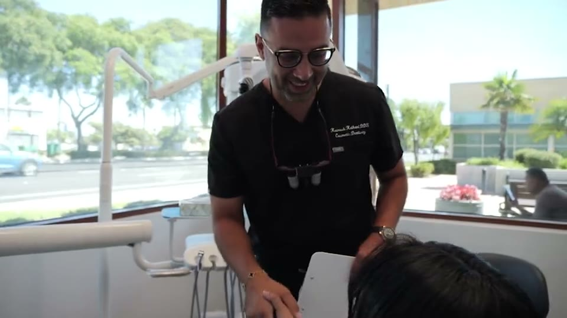
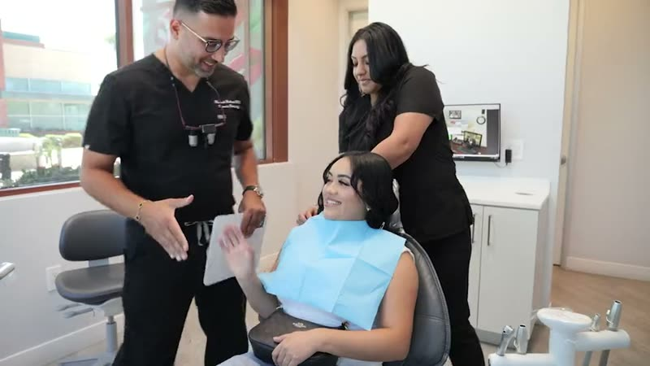

Dental Implants
Titanium implants that replace missing teeth with stable, natural-looking restorations.
Dental Implants for West Village and East VillageGum care for both villages
Gum disease rarely hurts, so gums that look red or puffy, or bleed easily, may be the only early clue. If you live in West Village or East Village, Dr. Keihani can look your gums over at 1690 E. Gonzales Road, Oxnard, the one office we run.
About gum disease
Gum disease is an infection in the tissue that anchors your teeth. Plaque, the sticky layer of bacteria that keeps forming on teeth, sets it off, and since the disease seldom hurts, people often have it for a while before they notice.
The first stage is gingivitis. The gums may look red and puffy and bleed easily, and a professional cleaning, followed by brushing and flossing every day, can usually clear it.
If nothing is done, gingivitis may move on to periodontitis. Here the gums pull back from the teeth, and the pockets that open up become infected. Over time the infection starts breaking down the bone and tissue holding the teeth (opens in a new tab). After bone is lost the disease is past reversing, but it can still be kept in check.
The City of Oxnard lists a neighborhood council for each village, with West Village meeting at Brekke School and East Village at the Rio Rosales school. Wherever you live in the two villages, Dr. Keihani can examine your gums at our E. Gonzales Road office and talk through what you have noticed.
Step by step
Your first visit is a comprehensive consultation, not an immediate procedure. It’s a conversation.
We will gently examine your gums, teeth, and the underlying bone structure.
We use state-of-the-art 3D imaging (CBCT) to get a precise, detailed view of your jawbone and oral structures. This is crucial for an accurate diagnosis and treatment planning.
Treatment often combines gentle, deep cleaning procedures like scaling and root planing with targeted antimicrobial therapies to eliminate harmful bacteria below the gumline. For more persistent infections, we may also recommend locally applied antibiotics or laser therapy to minimize discomfort and encourage faster healing.
Our extensive periodontal treatments include scaling and root planing, pocket reduction procedures, gum grafting, and bone grafting, all aimed at controlling disease progression and restoring gum tissue.
Throughout your care, we educate you on effective oral hygiene techniques and schedule regular follow-up appointments to ensure your gums remain healthy.

Why it matters
Effective gum disease treatment is vital because untreated gum infections are a leading cause of adult tooth loss and can seriously impact your overall health. By controlling inflammation early with the right care, you help preserve the bone and tissue that support your teeth.
What we offer
Deep cleanings sit beside crowns, implants and routine checkups at one office that welcomes West Village and East Village patients.
Titanium implants that replace missing teeth with stable, natural-looking restorations.
Dental Implants for West Village and East Village
Porcelain veneers, dental bonding, teeth whitening and smile makeovers.
Cosmetic Dentistry for West Village and East Village
Clear aligners that straighten teeth gradually, without metal brackets.
Invisalign for West Village and East Village
Exams, dental crowns and root canals for patients from youngsters to seniors.
General Dentistry for West Village and East Village
Prompt, compassionate emergency dental care to address your pain.
Emergency Dentistry for West Village and East Village
Treatment that saves a damaged tooth by cleaning out the pulp.
Root Canal for West Village and East Village
A tooth-shaped cap that restores the shape, size, strength and appearance of a damaged tooth.
Dental Crowns for West Village and East Village
Care for wisdom teeth that lack space or come in incorrectly.
Wisdom Teeth for West Village and East Village
Whitening treatments, including custom at-home whitening kits.
Teeth Whitening for West Village and East Village
Custom night guards and splints to protect your teeth and jaw.
TMJ Therapy for West Village and East VillageOur approach
Every step of your treatment is explained, your concerns are addressed, and gentle care is our promise
Comfort
We know that the thought of a dental procedure can cause anxiety. We take every measure to ensure your treatment for periodontal disease is as painless and stress-free as possible.
We use advanced local anesthetics to ensure the treatment area is completely numb. We utilize modern technology like dental lasers for certain procedures, which often means less discomfort, reduced swelling, and faster healing times compared to traditional methods. We listen to your concerns and proceed at a pace that feels comfortable for you.
Our team focuses not only on treating existing damage but also on creating a personalized plan for ongoing prevention, addressing risk factors like diabetes, smoking, and oral hygiene habits.
Treatments
Scaling and root planing at Omni Dental Specialty is a non-surgical, deep cleaning treatment designed to combat gum disease at its source. During the scaling procedure, our team meticulously removes plaque and tartar from above and below the gumline, targeting the harmful bacteria responsible for periodontal disease. The next step, root planing, smooths the tooth roots, helping the gums reattach and reducing the future accumulation of bacteria.
Pocket reduction surgery, also known as flap surgery, is a targeted treatment for West Village and East Village patients’ advanced periodontal pockets that do not respond to non-surgical therapies. This surgery reduces pocket depth and halts the progression of gum disease.
Gum grafting surgery at Omni Dental Specialty restores lost gum tissue by carefully transplanting healthy tissue to areas affected by recession.
Bone grafting plays a vital role in rebuilding jawbone structure after tooth loss, advanced gum disease, or injury.
Crown lengthening is a periodontal procedure that reshapes gum tissue, and sometimes bone, to reveal more of a tooth’s surface.
Why patients choose us
One office on E. Gonzales Road for routine care, smile makeovers and tooth replacement, led by Dr. Kourosh Keihani, DDS.
Patients rate the practice Excellent, based on 614 Google reviews.
Book Online (opens in a new tab)The Oxnard office uses a CT scan, an intraoral camera, digital X-rays and an aerosol machine.
The CT scan is used for CT-guided implant placement.
Omni Dental Specialty accepts Denti-Cal, most PPO plans and HMOs.
Call before your visit to ask about your plan, or about financing.
The office is open for emergency dental appointments, for tooth pain and other urgent problems.
Call (805) 366-6000 to arrange a visit.
General, restorative and cosmetic dentistry for patients from youngsters to seniors.
From exams and crowns to implants, veneers and Invisalign, under one roof at 1690 E. Gonzales Road.
Patient reviews
Dr. Keihani is an excellent dentist, experienced and talented to give solutions to my varied dental needs. I’m very thankful His staff is also very friendly and helpful. A well-run clinic.
“Waiting time was 5mins, office staff friendly, doctor let you know what’s going on, and Alijah is happy! That’s what counts to me!!!”
“I had very a good experience at Omni Dental. The staff is very friendly and caring. I highly recommend this office for dental treatment.”
“Such a great attitude, attention, atmosphere, you can’t ask for more!”
“Crystal is very professional and curtious I highly recommend her as a hygenist office staff nice.”
“The doctor was excellent the owner of the company very knowledgeable very experienced very hospitable he really knows his dental work very affordable I would recommend him to every person go see this doctor doctor that Omni dental Office”
Questions
Your oral health and confidence in your smile are our top priorities.
While many patients are referred by their general dentists, a referral is not mandatory to schedule an appointment with our Oxnard team. If you’re experiencing any symptoms related to gum disease or have concerns about your gum health and the condition of your teeth, you can contact us directly to book a consultation for an evaluation and treatment plan.
Your initial visit includes a comprehensive assessment where our team will examine your gums, teeth, and jawbone, often using advanced 3D imaging technology. We’ll discuss our findings with you in clear terms, answer all your questions about your gum health, and develop a personalized treatment plan designed to meet your specific needs, all in a relaxed, stress-free environment. This consultation is the first step in addressing your gum disease.
At Omni Dental Specialty, we prioritize your comfort throughout every procedure and treatment. We use effective local anesthesia, minimally invasive techniques like laser therapy, and a compassionate approach to ensure all treatments for gum disease are as painless and anxiety-free as possible. Most of our patients report little to no discomfort during and after their treatments for their teeth and gums.
Yes. While smoking can make you more susceptible to gum disease and slow the healing process, it does not prevent you from receiving effective treatment. Our team will work with you to create a plan to help you manage your condition and improve your oral health. We are here to support you without judgment.
After pocket reduction surgery, most patients experience mild discomfort and swelling, which is manageable with prescribed medications and gentle oral care routines. Recovery typically takes one to two weeks. Use prescribed rinses and soft brushing techniques to prevent infection. Avoid smoking and hard foods during the healing stage. Attend all follow-up appointments for professional monitoring and cleaning.
We understand financial concerns can be a barrier to getting proper care. Omni Dental Specialty accepts most dental insurance plans and will work with you to maximize your benefits. We also offer flexible financing options through third-party partners like CareCredit, allowing you to receive necessary treatment without delay. We provide transparent pricing upfront for every procedure, so you can make informed decisions about your health confidently.
Yes. Both are Oxnard neighborhoods.
Yes, through the contact page. Keep medical details out of the message.
Visit us

Visit us
1690 E. Gonzales Road, Oxnard, CA 93036
Monday to Thursday, 9am to 5pm
Friday, 9am to 4pm